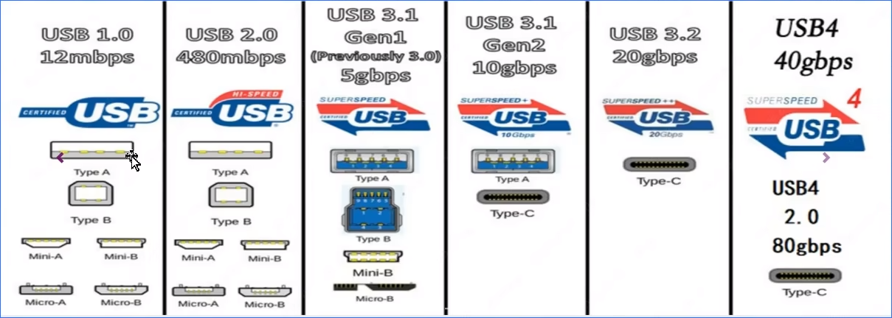
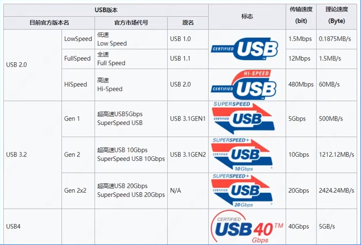
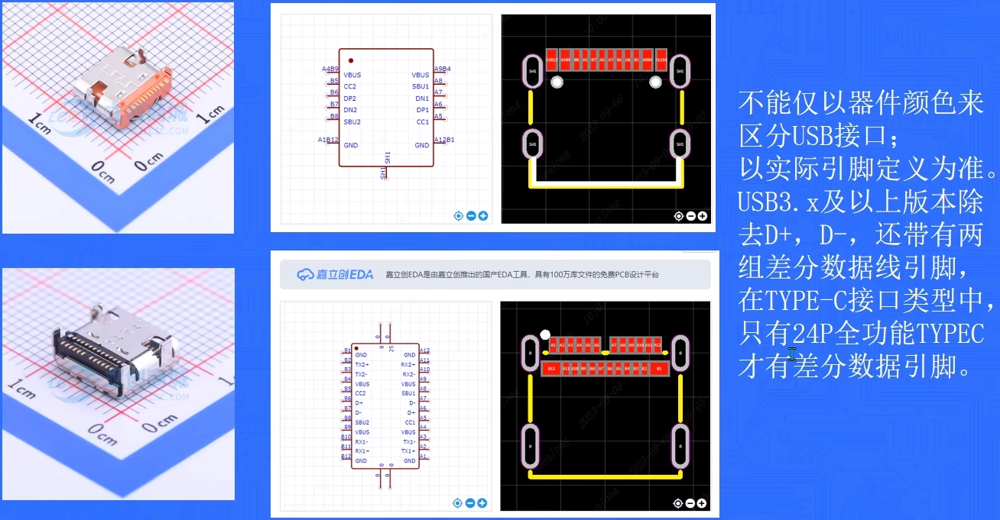
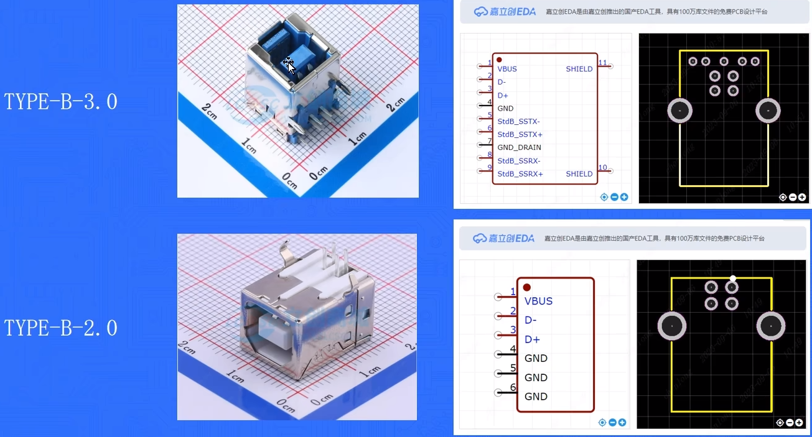

# USB 接口介绍
参考视频：四层板 PCB 设计保姆级教程（1）：3.0HUB 设计概述
# USB 接口定义
USB 是通用串行总线的英文缩写，也是一种输入输出接口的技术规范，被广泛的应用于个人电脑和移动设备等通信产品。
USB 接口自 1994 年推出以来，经过不断的发展，从最初的 USB1.0/1.1，USB2.0，USB3.x，最终发展到如今的 USB4，传输速率也从最开始的 1.5Mbps 提升到了最新的 40Gbps。
需要注意的是，USB 不是某一个接口，每一代 USB 协议都会衍生出一系列支持该通讯速率的接口设备。
下面是一些常见的 USB 接口设备。

# USB 版本区分
目前使用最广泛的是 USB2.0 以及 USB3.x
习惯将 USB3.1Gen1 叫做 USB3.0
将 USB3.1Gen2 叫做 USB3.1
将 USBGen2*2 叫做 USB3.2

# USB 接口选型

